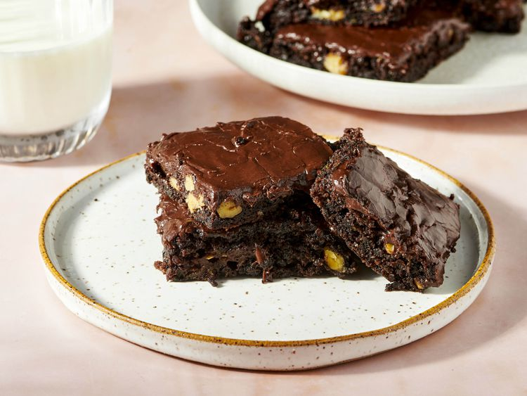
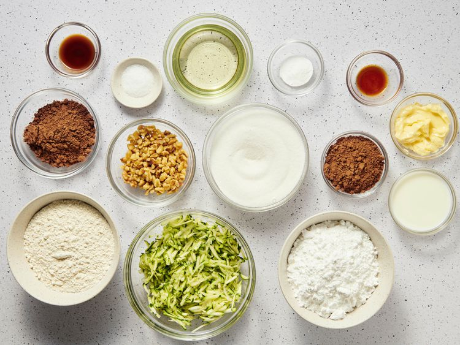
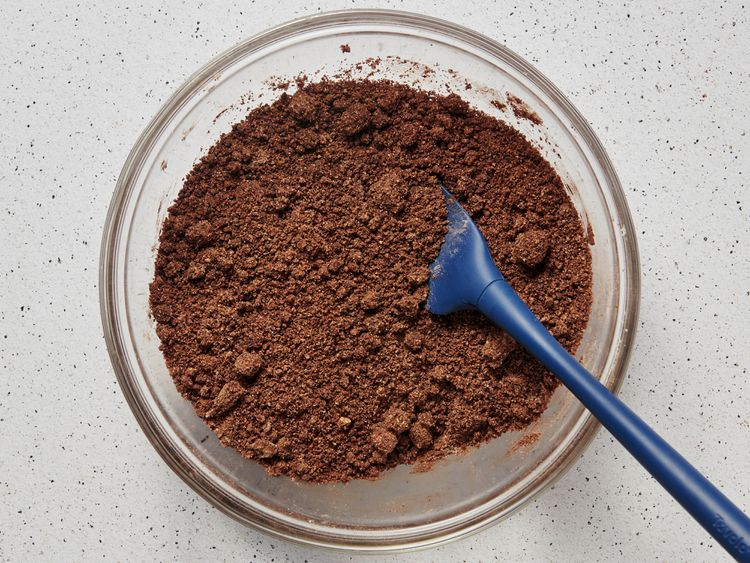
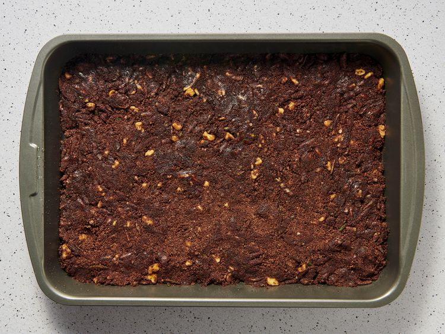
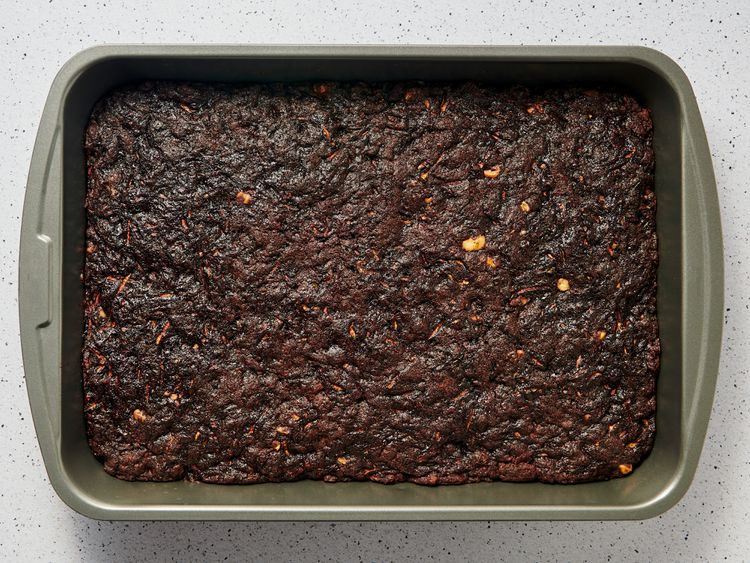
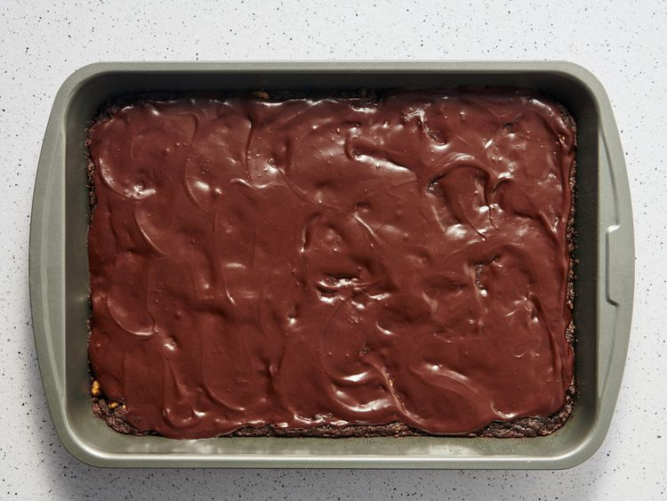

Home
Zucchini Brownies
Zucchini Brownies

About
These zucchini brownies are deliciously moist and are topped with a yummy chocolate frosting. An easy way to use abundant zucchini!
Ingredients
- 1 ½ cups white sugar
- ½ cup vegetable oil
- 2 teaspoons vanilla extract
- 2 cups all-purpose flour
- ½ cup unsweetened cocoa powder
- 1 ½ teaspoons baking soda
- 1 teaspoon salt
- 2 cups shredded zucchini
- ½ cup chopped walnuts
Frosting
- 6 tablespoons unsweetened cocoa powder
- ¼ cup butter
- 2 cups confectioners' sugar
- ¼ cup milk
- ½ teaspoon vanilla extract
Directions
- Gather the ingredients. Preheat the oven to 350 degrees F (175 degrees C). Grease and flour a 9x13-inch baking pan.

- Mix sugar, oil, and 2 teaspoons vanilla together in a large bowl until well blended. Combine flour, 1/2 cup cocoa, baking soda, and salt together in a separate bowl; stir into sugar mixture.

- Fold in zucchini and walnuts; spread batter evenly into the prepared pan.

- Bake in the preheated oven until top is dry and edges have started to pull away from the sides of the pan, about 25 to 30 minutes. Let cool, about 20 minutes.

- Meanwhile, make the frosting: Whisk 6 tablespoons of cocoa and butter in a pan over medium-low heat until smooth and glossy; set aside to cool.

- Blend confectioners' sugar, milk, and 1/2 teaspoon vanilla together; stir into cooled cocoa mixture. Spread over cooled brownies before cutting into squares.

- Serve and enjoy!